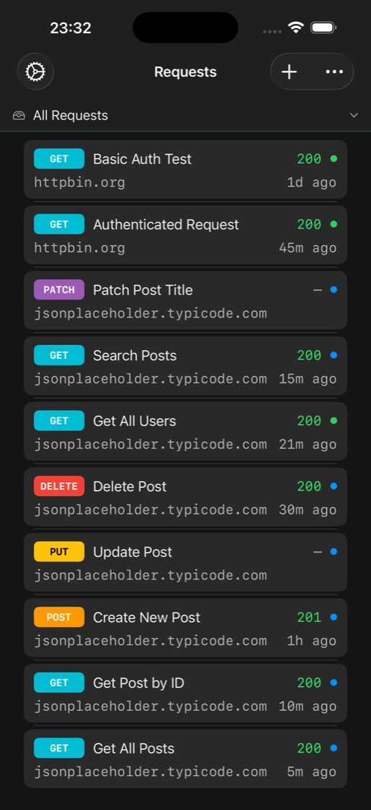
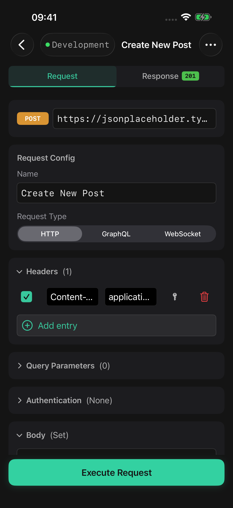
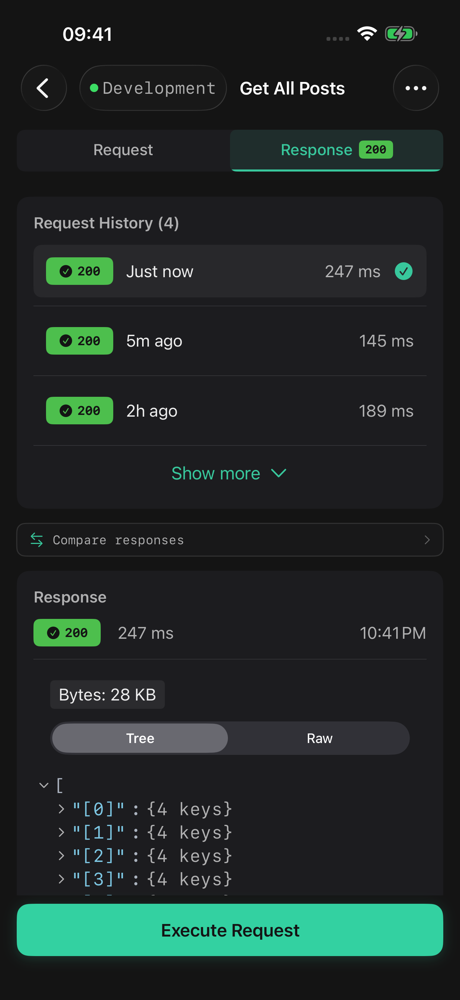
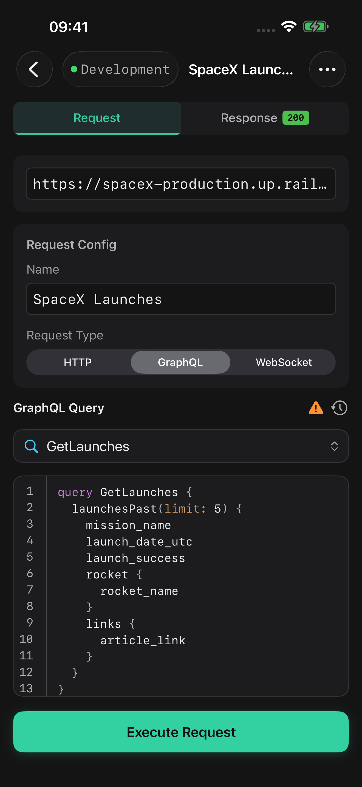
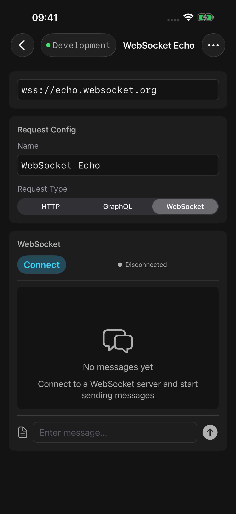
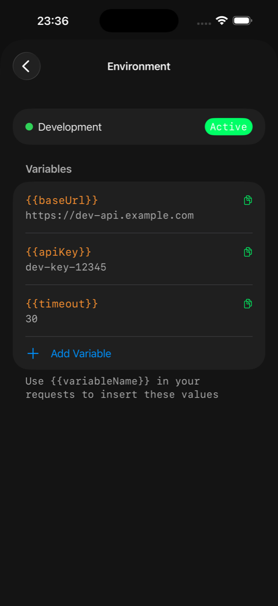

HTTP Requests
GET, POST, PUT, PATCH, DELETE with full header and body control. Multipart/form-data with file upload built in.
ProbePad is a powerful, privacy-focused API testing app. Build REST and GraphQL requests, open WebSocket sessions, upload files, and trigger saved requests from Siri — all from your pocket. New in 1.5: multipart uploads, App Intents, and a fresh amber look.
Professional API testing tools, designed for mobile.
GET, POST, PUT, PATCH, DELETE with full header and body control. Multipart/form-data with file upload built in.
Dedicated query editor with variables, operation names, and pretty-printed responses. Run queries, mutations, and subscriptions.
Open WebSocket sessions, send text and binary frames, and inspect every message in a live transcript.
Organize requests into folders. Switch between dev, staging, and production with one tap.
Store API keys securely in the iOS Keychain with Face ID / Touch ID protection. Secrets never leave your device.
Compare responses with JSON diff. Track status, latency, and payload changes over time.
"Run Saved Request" and "Send HTTP Request" App Intents for Siri, the Shortcuts app, and Focus automations.
Import Postman v2.1 collections, paste cURL commands to create requests, and export back to cURL.






Multipart/form-data with file upload — test image uploads, file APIs, and any endpoint that expects form-data parts.
App Intents for "Run Saved Request" and "Send HTTP Request" — wire ProbePad into Siri, the Shortcuts app, and Focus automations.
{ } " : , [ ] and your environment variables sit as one-tap chips above the system keyboard. No more hunting for brackets.
A redesigned amber probe matches the in-app palette. Liquid Glass on the Send button and tab bar on iOS 26, with translucent fallback on iOS 17–18.
"201 · 245 ms · 1.2 KB" slides in when a request completes. Haptic feedback on send, response arrival, errors, copy, and method changes.